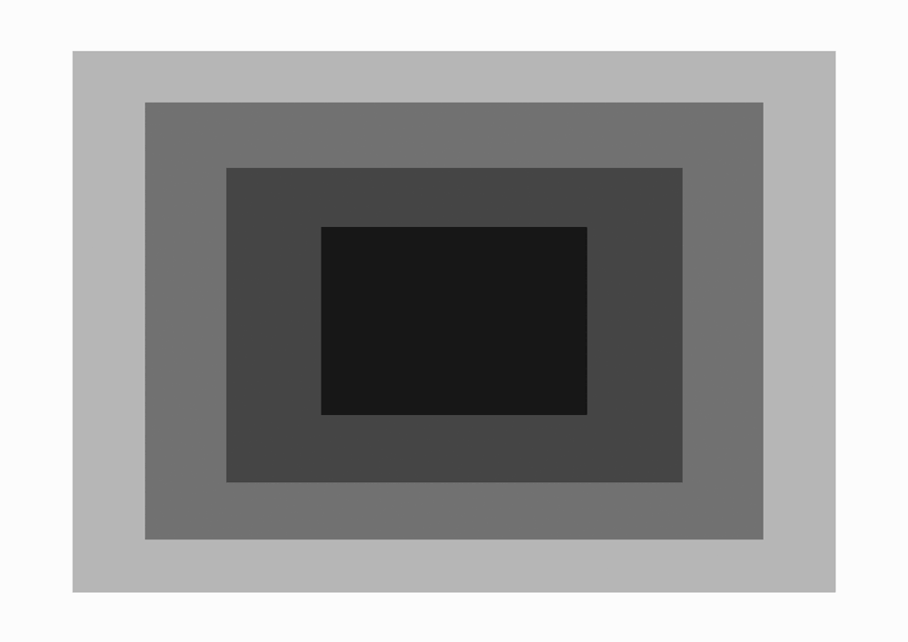
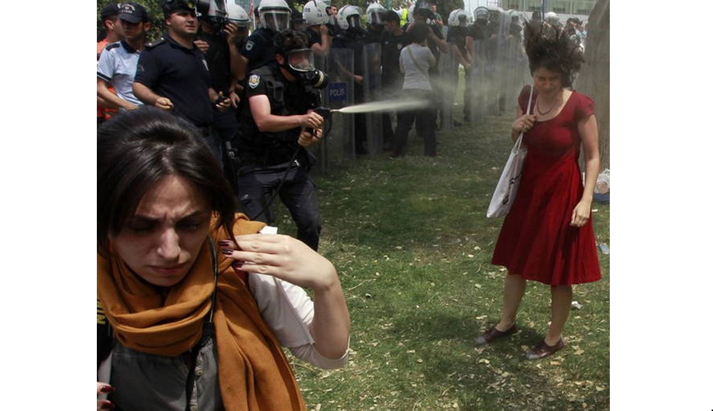
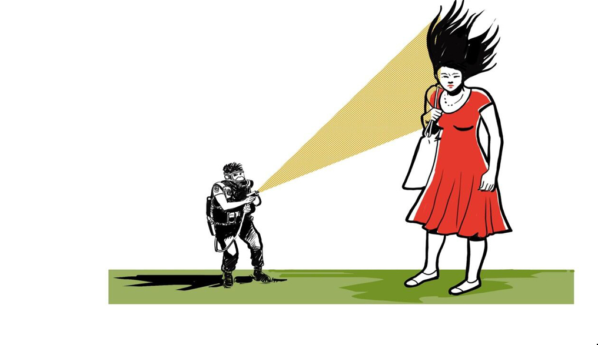
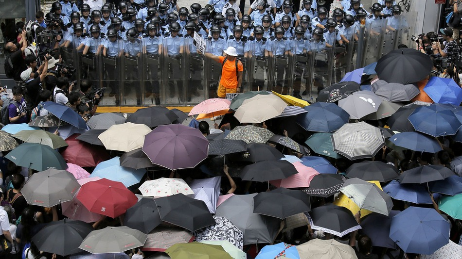

<!doctype html>
<html>
<head>
	<link href='https://fonts.googleapis.com/css?family=Libre+Baskerville:400,400italic,700' rel='stylesheet' type='text/css'>
	<link href='https://fonts.googleapis.com/css?family=Source+Sans+Pro:400,700,400italic,300' rel='stylesheet' type='text/css'>
	<link rel="stylesheet" href="css/reset.css"> <!-- CSS reset -->
	<link rel="stylesheet" href="css/style.css"> <!-- Resource style -->
	<script src="js/modernizr.js"></script> <!-- Modernizr -->
	<script src="js/jquery.min.js"></script> <!-- navigation -->
	<script src="jquery-1.12.0.min.js"></script> <!-- hover -->

	<script>
			$(function() {
			  $('a[href*=#]:not([href=#])').click(function() {
			    if (location.pathname.replace(/^\//,'') == this.pathname.replace(/^\//,'') && location.hostname == this.hostname) {
			      var target = $(this.hash);
			      target = target.length ? target : $('[name=' + this.hash.slice(1) +']');
			      if (target.length) {
			        $('html,body').animate({
			          scrollTop: target.offset().top
			        }, 1000);
			        return false;
			      }
			    }
			  });
			});
			$(document).ready(function(){
			  $(".navi").click(function(){
			    $(".navi2").slideToggle(600);
			  });
			});
		</script> 
		
	 <meta name="description" content="Hoe metaforen gebruikt worden in visueel protest." />           
     <meta property="og:title" content="Visueel Protest" />            
    <meta property="og:image" content="http://kabk.github.io/govt-theses-16-john-van-der-meule/imag/kuffer.jpg" />
    <meta property="dc:creator" content="Charlotte Gramberg" />		
	<title>Charlotte Gramberg</title>
</head>

<!-- hijacking: on/off - animation: none/scaleDown/rotate/gallery/catch/opacity/fixed/parallax -->

<body data-hijacking="off" data-animation="opacity">
	
	<!-- <div class="navi">
		<a>Index</a>
	</div>
	<div class="navi2">
			<p>
				<b><a href="#1">Metaforen en Grafisch </a></b> <br>
				<b><a href="#2">Manifestaties </a></b><br>
				<b><a href="#3">Feiten</a></b><br>
				<b><a href="#4">De feiten </a></b><br>
				<b><a href="#5">Blabla </a></b><br>
			
			</p>
		</div>-->
	
		<section class="cd-section">
		<div class="wrap" id="1">
			<div class="intro">
			

			</div>
		</div>
	</section> 
	
	<section class="cd-section">
		<div class="wrap" id="2">
			<div class="tussenkop">
				Introductie
			</div>
		</div>
</section>
	
<section class="cd-section ">
		<div class="wrap" id="3">
		<h2>1.1 Introductie</h2>
				<div class="tekst">
				Deze scriptie zal zich focussen op het onderwerp metaforen. Dit onderwerp heb ik vooral gekozen vanwege mijn persoonlijke interesse in metaforen binnen de spreektaal. Metaforen beperken zich echter niet alleen tot spreektaal maar worden ook veel gebruikt binnen de visuele wereld.  Van communicatie tot aan beeldende kunst. Als studerend grafisch ontwerper zal de focus daarom vooral liggen op beeldmetaforen.
				<br><br>In het eerste deel van mijn scriptie probeer ik de basis te leggen die nodig is om het begrip &#39;metaforen&#39; beter te begrijpen. Wat is een metafoor nu precies? En in welke vormen komen deze voor? Maar ook, hoe lezen we &#252;berhaupt de wereld om ons heen? Waardoor begrijpen wij beelden? 
				<br><br>Tijdens mijn onderzoek kwam ik erachter dat metaforen iets veel groters zijn dan de letterlijke betekenis.  Ze zijn overal om ons heen, en door alle kennis die ik heb vergaard is het mij opgevallen hoeveel metaforen er eigenlijk zijn in het dagelijks leven. Hoe vaak we wel niet metaforen gebruiken in spraak, de diversiteit waarmee we ze gebruiken. Hoe we ze bewust, soms onbewust, verwerken in onze uitleg en concepten.
				<br><br>Als verdieping in het begrip &#39;metaforen&#39; doe ik onderzoek naar metaforen binnen visuele protesten. Binnen deze scriptie zullen vijf bewegingen en hun identiteit geanalyseerd worden om vervolgens te kijken of deze metaforisch van aard zijn, en of er wellicht een onderliggende metaforische gelijkenis te vinden is die ze allemaal verbind in de keuze van beelden. En om dan uiteindelijk antwoord te kunnen geven op de vraag: Is er een onderliggende metaforische gelijkenis te vinden in huidige Grassroot Movements? 
				</div>
		</div>
</section>

<section class="cd-section">
		<div class="wrap" id="4">
		<h2>1.2 Mijn werk metaforisch gezien</h2>
				<div class="tekst">
				Wat mij aanspreekt in metaforen is dat het als het ware een soort lagen zijn waarmee gewerkt wordt. Je ziet iets aan de hand van iets anders, je moet door &#39;de laag&#39; heen kijken om op een andere te stuiten. Ik gebruik niet altijd metaforen als concept of uitvoering, maar ik merk dat veel van mijn werk dezelfde metaforische grondslag heeft. Namelijk het zien van deze wereld in lagen. Waarin elementen los van elkaar te zien zijn en ook weer opnieuw samen te voegen. 
				<br><br>	Als we kijken naar de afgelopen jaren, dan zijn mijn beste projecten degene geweest waarin ik mijn wereld als het ware onderverdeel in lagen.
				<br><br>	In het eerste jaar was dat bijvoorbeeld het project van De Zeeman (afb 1). Bij deze opdracht moesten we een website gebruiken die ons wel of niet aansprak, en deze omzetten naar een analoog ding.  Ik heb toen alle elementen die op de pagina&#39;s van zeeman waren losgehaald van elkaar en ze vervolgens opnieuw samengevoegd. 
				<br><br>	In het tweede jaar had ik zo bijvoorbeeld een project bij het vak &#39;Beeld&#39;. Ik probeerde alle lagen uit een gedicht naar boven te laten komen en vervolgens visueel te maken. 
				<br><br>	In het derde jaar kenmerken mijn beste projecten zich ook door deze gelaagdheid van de wereld. Ditmaal moesten we een foto onderzoeken en hier een visueel project aan vastplakken. Vervolgens heb ik deze foto opgebroken tot allemaal losse lagen. Deze lagen ben ik vervolgens gaan zoeken en zo probeerde ik elke laag weer apart terug te vinden. Dit resulteerde uiteindelijk in twee publicaties (afb 2) waarbij in de ene publicatie alle losse mogelijke lagen te zien zijn. En in de ander waar composities zijn gemaakt met deze lagen. 
				<br><br>	Als we kijken naar het vak van Grafisch Ontwerpen dan gaat het eigenlijk constant om deze lagen opbouwen en vervolgens weer afbreken. Grafisch Ontwerpen is in die zin wellicht op zichzelf al metaforisch. We kiezen er voor om bepaalde elementen, bepaalde lagen te laten zien en andere weg te laten om zo een duidelijk beeld voor de kijker te scheppen. Vooral bij mijzelf merk ik een bepaalde consistentie in deze aanpak. En dat het me helpt duidelijkheid te cre&#235;ren in de projecten die ik maak. 
				</div>
</section>

<section class="cd-section">
		<div class="wrap" id="5">
			<div class="tussenkop">
				Theoretische verdieping
			</div>
		</div>
</section>

<section class="cd-section">
		<div class="wrap" id="6">
			<h2>Wat zijn metaforen?</h2>
				<div class="tekst">
				<b>Me&#46;ta&#46;foor</b><div class="source_hover" data-bron='Geen auteur,Van Dale zoeken. https://www.vandale.nl/zoeken/zoeken.do'>&rarr;</class>
				<br> <i>Zelfstandig naamwoord; de (v(m))</i>
				<br> 1. Overdrachtelijk taalgebruik in het algemeen, stijlfiguur of betekenisverandering waarbij een woord of uitdrukking gebruikt wordt als naam voor iets waarop ze in letterlijke zin niet van toepassing zijn.
				<br><br>Metaforen zijn er in verschillende uitingen. Veel mensen kennen metaforen als iets linguïstisch (taalkundig). Er is zelfs onderzoek gaande naar het gebruik van metaforen in muziek. 
				<br><br>Ook in onze visuele wereld ervaren we constant bewust en onbewust metaforen. Reclames, logo&#39;s, het verkeer, kleuren etcetera. Velen zijn zo bekend voor ons dat we er niet eens meer over nadenken. We zien iets gewoon zoals het is en we lezen de metaforische boodschap onbewust, zonder erbij na te denken. 
				<br><br>Een voorbeeld hiervan is de waterkraan, waarbij we direct weten dat de rode knop voor warm water staat en de blauwe knop voor koud water. Informatie dat je leest zonder erbij na te denken. De verbinding tussen rood en warmte is vanzelfsprekend lijkt het.  Maar het komt voort uit een metaforische aard. Namelijk: rood is warm.  Zoals vuur rood gloeit, ijzer rood wordt als het wordt verhit, lava een rode gloed heeft. Het komt door dit netwerk van associaties dat we het beeld direct kunnen lezen en interpreteren. 
				<br><br>Als we kijken naar wat voor begrip &#39;de metafoor&#39; is dan zien we dat deze behoort tot beeldspraak.  Waarna dit weer in de categorie stijlfiguren valt. 
				<br><br><b>Stijl&#46;fi&#46;guur</b>
				<br><i> Zelfstandig naamwoord; de (v(m)) </i>
				<br> 1. Uitdrukking die een stijl-effect teweegbrengt door bijzondere formulering, bijzonder gebruik van een woord of 
				afwijking van de gebruikelijke zinsbouw, bv. het hebben van een relatie met twee of meer partners
				<br><br><b>Beeld&#46;spraak</b>
				<br><i>Zelfstandig naamwoord; de (v(m)) </i>
				<br>Taalvorm waarbij een gedachte of begrip indirect tot uiting wordt gebracht door middel van beelden (9) (bv. &#39;ijskoud&#39; voor &#39;onbewogen&#39;)
				<br><br>Kijkend naar hoe metaforen werken dan zien we dat het een projectie van eigenschappen van het ene onderwerp op het andere is. Er word een begrip uitgelegd en verduidelijkt aan de hand van een ander onderwerp. Deze onderwerpen hebben feitelijk vaak niks gemeen maar delen vaak wel enkele associaties en connotaties. Deze onderwerpen worden vaak aangeven als het &#39;doel-domein&#39; en het &#39;bron-domein&#39;. <div class="source_hover" data-bron='Lakoff and Johnson, G, M, (1980). <i>Metaphors we live by.</i> London: The university of Chicago press. '>&rarr;</class> Waarbij het &#39;doel&#39; het onderwerp is wat verduidelijkt wordt aan de hand van het andere, namelijk het bron-domein
				<br><br>We verduidelijken dit even met de metafoor &#39;tijd is geld&#39; &#39;Tijd&#39; (doel) wordt vaak gezien als iets van waarde, je hebt er soms maar weinig van, je kan tijd aan iemand besteden, je kan soms wel wat tijd missen, iets kan veel tijd hebben gekost. In deze zinnen word al duidelijk hoe we eigenlijk over tijd spreken aan de hand van geld.   Schematisch kunnen we dit als volgt weergeven:
				<br><br>
				Bron-Domein						Doel-domein
				<br>Geld	  	       >>>		Tijd
				<br>Euro&#39;s	  	   >>>		Minuten
				</div>
		</div>
</section>
	
<section class="cd-section">
		<div class="wrap" id="7">
			<h2>Kennis en Context</h2>
				<div class="tekst">
				We hebben net  gekeken naar hoe &#39;de metafoor&#39; werkt. En we weten dat de belangrijkste eigenschap van een metafoor is dat (minstens) een eigenschap van het bron-domein word geprojecteerd op het doel-domein. Het is hierbij belangrijk dat er een bepaalde gelijkenis is tussen beiden domeinen. Het plaatsen van het bron-domein en het doel-domein in een netwerk van gerelateerde betekenissen is  hierbij  essentieel.  Max Black noemde dit &#39;the system of associated commonplaces&#39;.<div class="source_hover" data-bron='Black, M, (1954-1955) Proceedings of the Aristotelian Society, New Series, Vol. 55, pp. 273-294. '>&rarr;</class> Het gaat hierbij dus niet alleen om kennis van dat wat word weergegeven. Maar ook van mogelijke connotaties en associaties bij dit domein. We zagen dit al kort bij tijd is geld.  Om dit nog wat te verduidelijken gebruiken we de metafoor liefde is een slagveld.
				<br><br>&#39;Liefde&#39; is deel van een netwerk waarin we ook denken aan woorden zoals geliefden, passie, seks, respect, rozen en ga zo maar door.  En zo is &#39;slagveld&#39; gerelateerd aan woorden zoals slachtoffers, pijn, overwinningen, soldaten. <div class="source_hover" data-bron='Forceville, C, (2007). A Course in Pictorial and Multimodal Metaphor. http://projects.chass.utoronto.ca/semiotics/cyber/cforcevilleout.pdf. '>&rarr;</class>
				<br>Als je deze twee begrippen samentrekt en eigenschappen van het bron-domein op het doel-domein projecteert, dan zie je dat het ook deze associaties zijn die je over projecteert. Er kunnen ook slachtoffers vallen in de liefde, je kan iemands hart winnen. Je kan vechten voor je geliefde.  
				<br><br>Maar het netwerk bestaat uit meer dan alleen woorden of en hun associaties.  Ze omvatten ook de gevoelswaarde van het woord, de emotionele lading. Als we het woord &#39;liefde&#39; tegen iemand zullen zeggen die op dat moment in een gelukkige relatie zit, zal deze aan andere dingen denken dan als we vragen wat liefde is aan iemand die net zijn hart gebroken heeft. Iemand in een gelukkige relatie zal de metafoor &#39;liefde is een slagveld&#39; wellicht niet begrijpen. Maar de persoon van wie zijn hart gebroken is wel. Dit laat zien hoe belangrijk de emotionele lading kan zijn.
				<br>Het netwerk omvat dus een grote hoeveelheid van gerelateerde concepten, associaties, culturele opvattingen, geloofsovertuigingen, mogelijke daden enzovoort. En kan dus van persoon tot persoon verschillen.  Als een metafoor dus niet duidelijk genoeg is, of een persoon sterke gevoels-waarden heeft bij bijvoorbeeld het  bron- en doel-domein, dan zal de metafoor niet goed kunnen overkomen.4
				<br><br>
				De omgeving waarin de metaforen gebruikt worden is essentieel. Of een beeld gebruikt wordt voor een reclamecampagne, een politieke cartoon of voor een film kan zeer bepalend zijn voor hoe de metafoor geïnterpreteerd wordt en of deze begrijpelijk is.
				<br><br>Maar de  context van metaforen gaat nog iets verder dan enkel het medium waarin ze voorkomen.  Meestal construeren we een metafoor als we denken dat de maker van het beeld die intentie heeft.4 En als we dit denken dan zullen we ook sneller een metafoor construeren uit het beeld. 
				<br><br>Een opvallende uitzondering hierop komt voor in het artistieke veld met autonome kunst. Het kan zijn dan een individu een metafoor ziet in een werk zonder dat de maker dit bedoeld heeft. We kijken immers met open ogen naar kunst. En staan dus meer open voor eigen interpretatie van het beeld dan dat we nadenken over de bedoelingen van de kunstenaar. Als er dus een metafoor gevormd kan worden in het werk, terwijl dit niet de intentie van de maker was, dan is dit niet meteen een ‘foute’ metafoor. Deze metafoor is evengoed aanwezig en ontstaat door bepaalde associaties en connotaties van de betreffende ontvanger.4
				</div>
		</div>
</section>

<section class="cd-section">
		<div class="wrap" id="8">
			<h2>Lakoff en Johson</h2>
				<div class="tekst">
				<i> &#39;We hebben gevonden dat, in tegendeel, metaforen doordringen tot ons alledaagse leven, niet alleen in taal maar in gedachten en acties. Ons normale conceptuele systeem, in termen van hoe we zowel denken als handelen, is fundamenteel metaforisch van aard&#39;</i>
<br>- Lakoff & Johnson (1980) 5

<br><br>George Lakoff en Mark Johnson zijn twee onderzoekers die samen het boek &#39;Metaphors we live by&#39; (1980)5 hebben geschreven. In mijn onderzoek naar metaforen komt dit boek veelvuldig voor als bron en daarom zal ik kort uitleggen wat belangrijke punten zijn uit het boek. 
<br>	In dit boek leggen zij zeer uitgebreid uit dat metaforen niet slechts poëtische hulpmiddelen zijn. Ze tonen aan dat metaforen essentieel zijn in ons alledaagse leven. In onze taal, onze gedachten, onze daden. Dit hoofdstuk is een korte samenvatting van de belangrijkste  onderwerpen die zij behandelen.

<br><br>In het eerste deel van het boek leggen zij uit dat veel van onze gedachten en ervaringen metaforisch van aard zijn. ‘Tijd is geld’ van het vorige hoofdstuk was hier al een kort voorbeeld van. Maar een ander duidelijk voorbeeld wat zij geven is bijvoorbeeld: Discussiëren is oorlog voeren. Je kan je tegenstander aanvallen, hij had een zwakke verdediging, je wint of verliest een discussie, je kan je strategie veranderen, al je argumenten kunnen worden neergehaald. We staan er in het dagelijks leven niet meer bij stil. Maar we praten in veel van dit soort gevallen metaforisch over een onderwerp. Het gaat zelfs veel verder dan spraak. We zien de andere persoon ook echt als een tegenstander,  je wint of verliest een argument ook echt. We praten niet alleen over discussies in termen van oorlog. We begrijpen deze ook daadwerkelijk zo. We voelen ook echt alsof we verloren hebben en we voelen ook echt de euforie van de winst.5

<br><br>Een belangrijk aspect waar zij op ingaan is dat je met metaforen slechts een deel vergroot van het domein. In het voorbeeld liefde is een slagveld dat zij aanhalen worden aspecten uitgelicht zoals slachtoffers. Het hart van iemand winnen,  ze vochten voor hun huwelijk. Dit is natuurlijk slechts een deel van de liefde. En met deze metafoor vergroot je maar enkele connotaties die we vinden bij het concept &#39;liefde&#39;. Bij de metafoor liefde is magie worden weer andere aspecten van het concept liefde uitgelicht. &#39;De magie was weg&#39; of &#39;ze heeft me betoverd&#39;. Waar de ene metafoor liefde laat zien als een gevecht, iets van tactiek bijna, toont de andere metafoor liefde als iets mysterieus.
	
<br><br>Ten slotte hebben Lakoff en Johnson ook metaforen onderverdeeld in verschillende categorieën. Wat handig kan zijn voor het begrijpen van de verschillende soorten metaforen die er zijn. En om zo enige structuur aan te brengen als we spreken over metaforen. 
<br>
<br><br><b> Ori&#235;ntatie metaforen:</b> metaforen die gericht zijn op de ruimte. Geworteld in culturele en lichamelijke ervaringen. Hierbij word een vergelijking getrokken tussen een ruimtelijke oriëntatie en een begrip. Bijvoorbeeld goed is boven die dan direct weer linkt aan de metafoor slecht is onder
<br> <br> <b>Structurele metaforen:</b>metaforen waarin een concept gestructureerd word aan de hand van een ander concept. Zoals tijd is geld. We Praten over tijd in de structuur zoals we ook over geld zouden praten. 
<br> <br> <b>Entiteit en Materie metaforen:</b> in deze vorm vergelijken we het doel met een entiteit of materie . Zodra we dit doen namelijk kunnen we ze groeperen, vergelijken en er op een concrete manier over nadenken en spreken.  
<br><br>  <b>Container metafoor: </b> waarin we alles afbakenen als zijnde een bepaalde ruimte. Een voorbeeld hiervan is : Hij komt in zicht. Het bos in gaan.  We bakenen hier bepaalde gebieden af terwijl deze niet direct een afgesloten ruimte is.  Zoals een kamer dat bijvoorbeeld wel is. 

				</div>
		</div>
</section>

<section class="cd-section">
		<div class="wrap" id="9">
			<div class="tussenkop">
				Case studies
			</div>
		</div>
</section>

<section class="cd-section">
		<div class="wrap" id="9">
			<div class="tussenkop">
				
			</div>
		</div>
</section>

<section class="cd-section">
		<div class="wrap" id="9">
			<div class="tussenkop">
				
			</div>
		</div>
</section>

<section class="cd-section">
		<div class="wrap" id="9">
			<div class="tussenkop">
				
			</div>
		</div>
</section>

<section class="cd-section">
		<div class="wrap" id="9">
			<div class="tussenkop">
				
			</div>
		</div>
</section>

<section class="cd-section">
		<div class="wrap" id="7">
			<div class="tekst">
				<span data-bron='Gore, A (2006) An Inconvenient Truth: The Planetary Emergency of Global Warming and What We Can Do about It' class='source_hover'><i>hallo</i></span>
				</p>Nu het begrip metaforen hopelijk iets duidelijker is kunnen we enkele cases analyseren en daarbij kijken naar het gebruik van metaforen. Deze cases bestaan uit zogeheten &#39;Grassroot movements&#39;.

<br><br>&#39;Grassroot movements&#39; zijn campagnes die worden opgezet door enkele individuen omdat zij een duidelijke mening hebben over een bepaald (politiek) doel. Het zijn individuen die het recht van vrijheid op meningsuiting gebruiken om hun mening te laten horen in de vorm van (visueel) protest.6 Er zijn vaak geen politieke partijen bij verbonden. Het zijn individuele mensen die tijd en moeite steken in een doel omdat zij graag verandering zien en zich zorgen maken over bepaalde ontwikkelingen.  Het kan soms wel zo zijn dat politieke partijen door middel van ‘grassroot movements’ de gunst van het publiek proberen te winnen.6

<br><br>Als een grassroot movement uiteindelijk wordt opgepikt door het grotere publiek kan deze vorm van protesteren erg effectief zijn. En zeker een verandering teweeg brengen.6 

			</div>
		</div>
</section>

<div class="credits">
<a href="http://www.charlottegramberg.nl/">Charlotte Gramberg - 2016</a>
</div>

	<nav>
		<ul class="cd-vertical-nav">
			<li><a href="#0" class="cd-prev inactive"></a></li>
			<li><a href="#0" class="cd-next"></a></li>
		</ul>
	</nav> <!-- .cd-vertical-nav -->
<script src="js/jquery-2.1.4.js"></script>
<script src="js/velocity.min.js"></script>
<script src="js/velocity.ui.min.js"></script>
<script src="js/main.js"></script> <!-- Resource jQuery -->
</body>
</html>